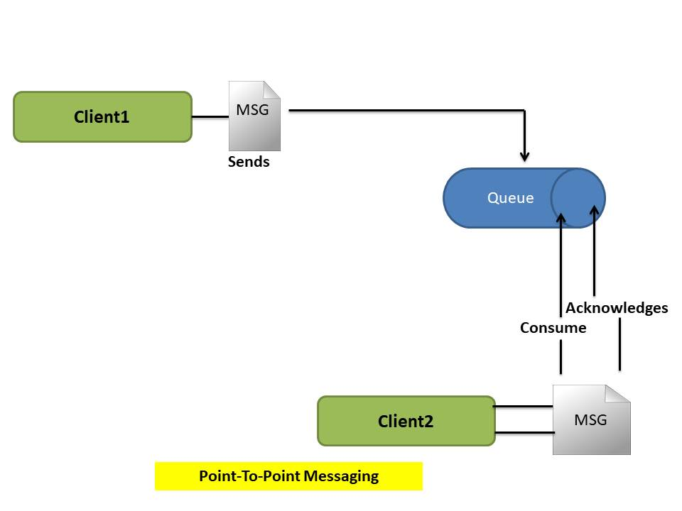
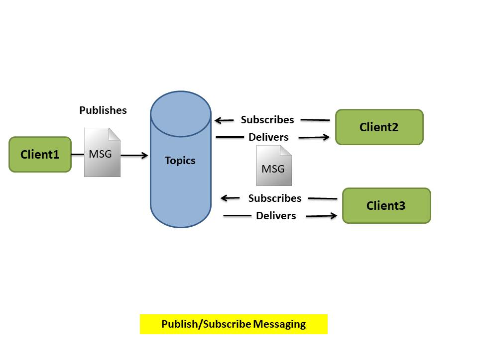
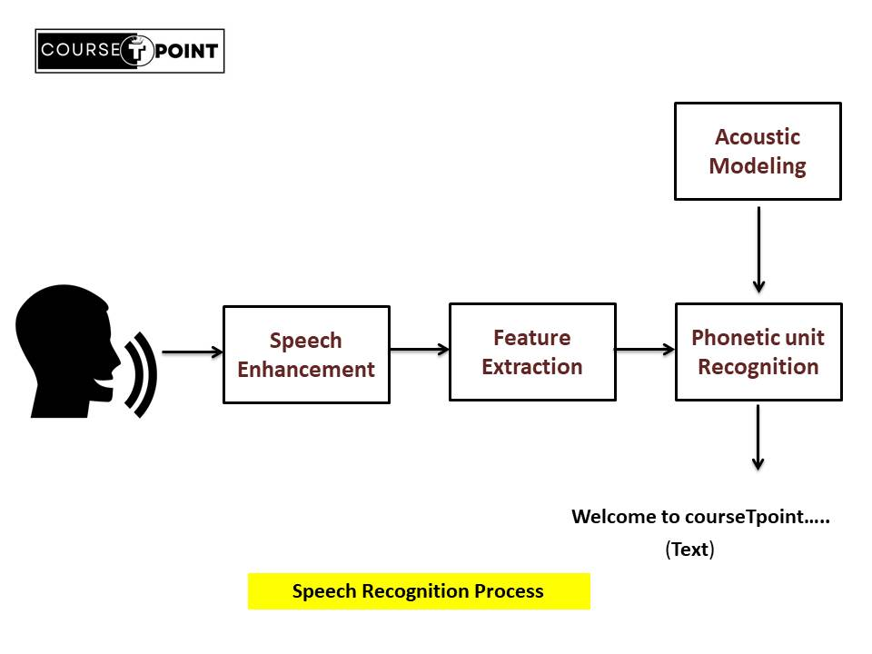
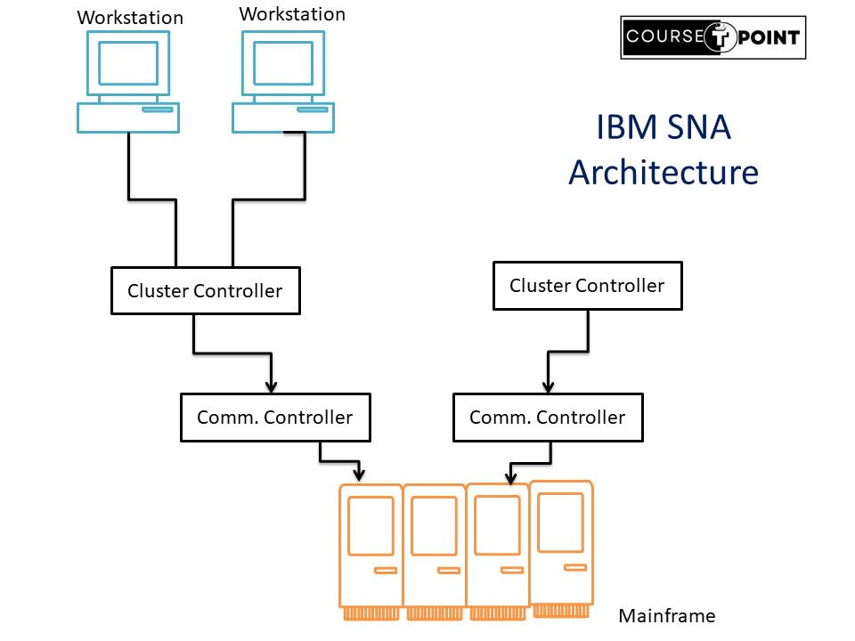

API in Java
| Table Of Content | |
|---|---|
About API
API(Application Programming Interface) is a collection of communication protocols and subroutines used
by various programs to communicate between them. A programmer can make use of various API tools to make
their program easier and simpler. Also, an API facilitates programmer with an efficient way to develop
their software.
The Java API (Application Programming Interface) is a collection of classes, interfaces, methods, and
other components that provide predefined functionality for developers to use in their Java applications.
Uses of Java API
- Creating Applications: The Java API provides essential building blocks for creating various types of applications, including desktop applications, web applications, mobile apps.
- Graphical User Interfaces (GUI): Java API include libraries like AWT (Abstract Window Toolkit) and Swing for creating graphical user interfaces (GUIs) in Java applications. Developers can use these APIs to create windows, buttons, menus, and other GUI components.
- Networking : Developers can use these APIs to create client-server applications, communicate over the internet, and interact with remote services.
- Database Connectivity : Access databases using JDBC(Java Database Connectivity) for tasks like querying, updating, managing data. Developers can use JDBC to interact with relational databases using standard SQL queries, execute database operations, and retrieve data from databases.
- Mobile Development : Develop Android Application using java, utilizing Android APIs for various functionality.
- Provide security : Implementation encryption, digital signature and secure communication using classes in the javax.crypto packages.
Types of API
There are the 4 types of APIs
- Open API(public APIs) : Open APIs are publicly available for any other users their is no restrictions on accessing them. They allow external users to access data and services provided by a company.
- Partner APIs : They are not publicly accessible. Partern APIs require licenses for access data. They are used by trusted partners or specific developer.
- Internal APIs(Private APIs) : Only Internal systems within a company expose these types of APIs. It is Designed for Internal use among different teams within the oragnization.
- Composite APIs : Composite APIs combine multiple data and service APIs. It allow the developer to access a set of related functionalities through a single API with simplifies the complex interactions and provide a great user experience.
Messaging API (MAPIs)
Messaging is a method of communication between software components or applications. A messaging system
is a peer-to-peer facility: A messaging client can send messages to, and receive messages from, any
other client. Each client connects to a messaging agent that provides facilities for creating, sending,
receiving, and reading messages.
The Java Message Service is a Java API that allows applications to create, send, receive, and read
messages. Designed by Sun and several partner companies, the JMS API defines a common set of interfaces
and associated semantics that allow programs written in the Java programming language to communicate
with other messaging implementations.
JMS API Architecture
A JMS application is composed of the following parts:

- A JMS provider is a messaging system that implements the JMS interfaces and provides administrative and control features. An implementation of the Java Enterprise Edition platform includes a JMS provider.
- JMS clients are the programs or components, written in the Java programming language, that produce and consume messages. Any Java EE application component can act as a JMS client.
- Messages are the objects that communicate information between JMS clients
- Administered objects are preconfigured JMS objects created by an administrator for the use of clients.
Messaging services are:
- Send and Receive Message
- MultiCommunication Channel
- Message Queuing
- Message Templet
- Delivery Status
- Security Tracking
Messaging Domain
- Point-To-Point Messaging Domain : Point to point message application delivered to one receiver. A sender and a receiver of a message have no timing dependencies. The receiver can fetch the message whether or not it was running when the client sent the message. 
- Publish/Subscribe Messaging Domain : (pub/sub) messaging domain provide facility to send one message to multiple receiver.Publishers and subscribers have a timing dependency. A client that subscribes to a topic can consume only messages published after the client has created a subscription, and the subscriber must continue to be active in order for it to consume messages. 
Telephony API (Telecommunication API)
The java Telephony API(JTAPI) supports Telephony call control. It is an extensible application
programming Interface designed to scale for use in a range of domains, from first party call control in
a consumer device to third-party call control in a large distributed call centers.
Telephony API provides developers with tools to intergrates telephony functions into their applications.
They allow access to features life making and receiving calls, sending SMS, call routing, voice mail,
and more often through cloud-based services. These APIs are used in various applications, from customer
support system to interactive voice response system and beyond.
Telephony services are :
- Call Control
- SMS messaging
- Call Management
- VoIP(Voice Over Internet Protocol)
- Number Validation
Speech API
Spech API enable applications to convert spoken language into text or vice-versa. Speech
API provides the facilities to recognized and synthesis. These APIs are Machine learning algorithm to
translate spoken words into written text and convert Written text into spoken words. They are used in
various applications including virtual assistants, dictation software, voice-controller device and
speech to text services.
The Java Speech API allows java application to incorporate speech technology into their user Interfaces. It defines a cross platform API to support command and control recognizers, dictation system and speech synthesizers.
- Speech recognition : Speech recognition help to convert spoken language into text.
- NLP(Natural Language Processing): Some APIs utilized NLP to understand the context and meaning behind the transcribed text for more accurate interpretation.
- Speech synthesis: speech synthesis help to convert writen text into spoken language. This process involves generating audio Output based on the provided text.
For Example : Google cloud speech-to-text, Microsoft azure speech services, conversa web 3.0.
Licence Service API
It is combination of three works:
- Licence : Generally refers to a legal agreement or permission granted by the software developer to the user to use software under certain condition.
- Service : Refers to specific functionality or capability provided by software application or platform.
- API : An API is a set of rules and protocol that allow different software application to communicate and interact with each other with the help of API tools to make their application easier and simpler.
The Java Licence Services API is a set of functions that provides developers with ability to manage software licence programmatically.
This API facilitates the creation, Validation, activation, and enforcement of software licence ensuring that only authorized user can access and use the application.
Services provides by Licence API:
- Licence Generation/ Creation
- Licence Validation
- Licence Activation
- Licence enforcement
- Licence Revocation
- Managing Licence Reporting and Analystics
Crypto API(Cryptographic API)
The Crypto API contain the functionality that allow application to encrpyt digital sign data in a flexible sensitive private keydata.
All Cryptographic Operation are performed by independent Module known as Cryptographics sercices provider(CSP).
Java Cryptofragphic Extensions(JCE) is a set of Java APi's which provides Cryptographic services such as encryption, secret Key Generation, Message Authentication code and Key Agreement.
Features:
- Encryption and Decryption
- Digital signature
- Key Management
- Random Number Generation
- Secure communication protocol
- Platform Independent
- Hashing
- Performance Optimization
SNA(System Network Architecture)
SNA stands for System Network Architecture is a Networking Architecture developed by IBM in 1974 for mainframe computer system. It define protocols and standards for communication between IBM and Mainframe computer system as well as between mainframe and peripheral devices such as plotter, printer, Monitor.
Layers of SNA
Multiple Networking layers are resposible for communication.
- Physical Layer: This layer deals with the physical transmission of data over the network, including encoding, signaling, and electrical characteristics.
- Data link Layer : The Data link Layer layer ensures error-free transmission of data across the network. It handles error detection, retransmission, and flow control.
- Data Flow and Control Layer: The data flow and control layer manages the flow and sequencing of data between Logical unit, ensuring reliable delivery.
- Boundary Control Layer : The Boundary control layer establishes, maintains, and terminates sessions between LUs.
- Transmission Control Layer: The Transmission layer handles end-to-end error recovery, flow control, and synchronization.